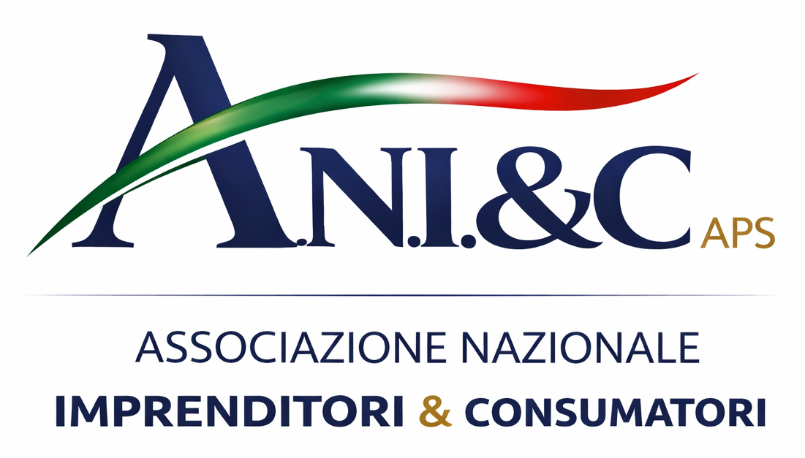

I servizi dell’associazione sono costruiti per offrire un primo livello di ascolto, informazione e orientamento, aiutando la persona a comprendere meglio il proprio contesto e a individuare il percorso più adeguato.
Il sovraindebitamento è una condizione di squilibrio economico che impedisce di far fronte regolarmente ai propri debiti. L’associazione offre un primo livello di orientamento per comprendere la situazione e individuare il percorso più adeguato nel rispetto della normativa vigente.
Supporto informativo finalizzato ad aiutare imprenditori e consumatori a leggere con maggiore chiarezza situazioni contrattuali, economiche e relazionali complesse, favorendo una comprensione più consapevole.
Primo punto di accesso dedicato all’ascolto e alla comprensione del bisogno, utile per orientare la persona verso il percorso più adeguato in base alla situazione rappresentata.
Accanto ai servizi principali, l’associazione sviluppa attività di carattere sociale, educativo e territoriale, finalizzate a intercettare bisogni differenti e a offrire un primo livello di supporto nei contesti di maggiore fragilità.
Interventi orientati alla prevenzione e alla sensibilizzazione nei contesti educativi e familiari, con particolare attenzione alle dinamiche relazionali e digitali.
Attività finalizzate a favorire consapevolezza, emersione e accesso a percorsi adeguati nei contesti di vulnerabilità e rischio.
Percorsi di accompagnamento per supportare la persona nella lettura delle proprie competenze e nell’individuazione di opportunità coerenti.
Supporto nei percorsi educativi e relazionali, con attenzione alla crescita e all’equilibrio nei contesti familiari e sociali.
Interventi di prossimità rivolti a persone vulnerabili e alla terza età, per favorire continuità e qualità nella vita quotidiana.
Attività formative su tematiche di utilità sociale, tra cui prevenzione, primo soccorso e competenze pratiche.
Per garantire correttezza e trasparenza, è importante chiarire che A.N.I. & C. APS opera nell’ambito dell’ascolto, dell’informazione e dell’orientamento.
Email: info@anicaps.it
Telefono: 3279342883
PEC: group.multiserviceaniec@pec.it